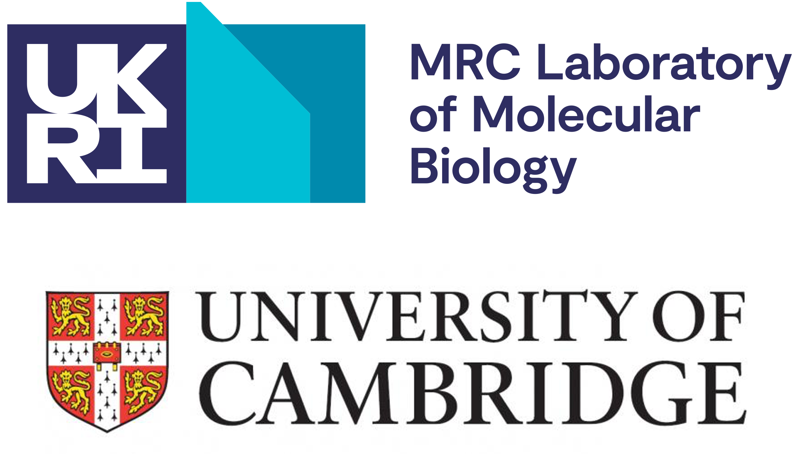
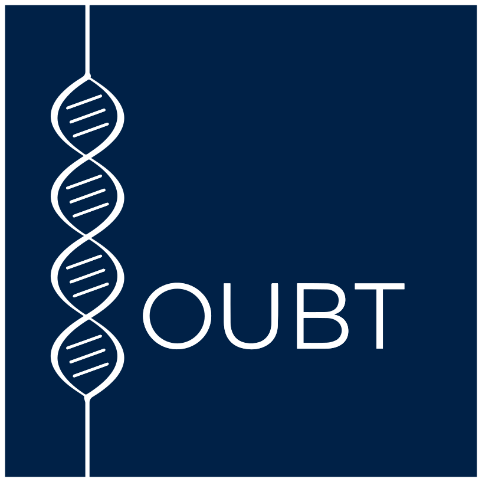

I am a Postdoctoral Fellow in the lab of Prof Rhiju Das at Stanford University. In my research, I am integrating high-throughput experimentation with machine learning to investigate and design molecular interactions mediated by RNA. Prior to my postdoc, I completed my PhD with Prof Charlotte Deane at the University of Oxford, where I developed machine learning models to predict and optimize sequence- and structure-based properties of antibodies. The ultimate aim of my research is to design better therapeutics at reduced timescales and costs.
Education & Experience
2024-present
Postdoctoral Scholar
Stanford School of Medicine Dean's Fellow (2025)
Stanford University
High-throughput experiments and machine learning for RNA design
2020-2024
DPhil in Statistics
University of Oxford
Machine learning for antibody design
2023
Visiting PhD Student
Harvard Medical School
Machine learning for antibody design

2019-2020
MPhil in Molecular Biology
MRC Laboratory of Molecular Biology, University of Cambridge, UK
Integrative computational analysis of GPCR-RAMP interactions
Co-founded and co-led the Oxford chapter of Nucleate, an international student-run organization that facilitates the formation of pioneering life sciences companies
Grew Oxford leadership team from 2 to >20 in 1 year
Key focus on supporting students/postdocs to spin out their research into companies – Nucleate Activator
Additional focuses included planning events to bolster the Oxford biotech entrepreneurship community, as well as research to better understand the ecosystem

Oxford University Biotech Society, President (2021-2022)
Led committee of 9 students in organising events promoting diversity and entrepreneurship in biotech
Organised events including "Careers in Biotech", "Women in Biotech" and "Diversity in Biotech" with speakers from various backgrounds
Ran 8-week biotech ideation programme (Catalyse Oxford) with team formation, mentorship and pitching events - led to the formation of 3+ startups between the 2021 and 2022 cohorts
Raised >£8,000 in sponsorship as well as 3-month lab space prize